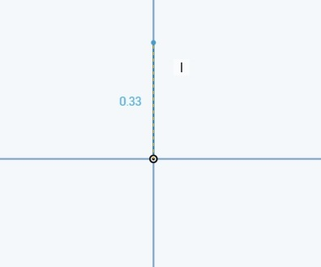
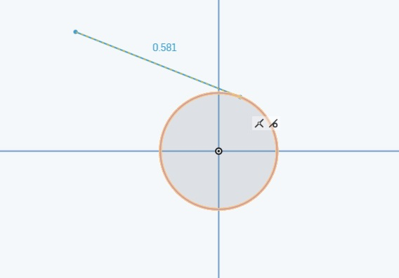
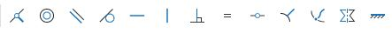
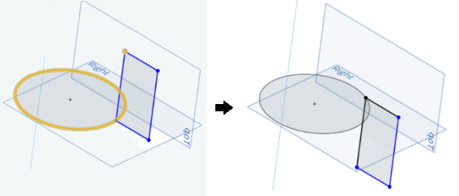

Introduction to 3D Modeling - Parts
3D建模簡介 - 零件
學習要點
Design Intent＿設計意圖
Design Intent is the practice of developing your project’s objectives and requirements even before working on your design.
設計意圖指在設計進行前, 必須完成之專案目的與需求確認
The more complex the geometry, the more we need to think about how we want to design the parts before just going ahead and making it.
幾何外型越複雜, 越需要在零件設計之前做好設計意圖的確認
Automatic Inferencing__自動推理
The Onshape sketch editor has the ability to assign constraints to certain entities automatically.
Onshape草圖編輯器能夠自動約束某些形式


當有自動約束時，線條會呈現虛線
若不想自動約束，按著shift即可暫時取消
constraints＿ 約束

Constrain a sketch entity (point or curve) to be coincident with the intersection point of its sketch plane and an arbitrary curve that is not in its sketch plane. The sketch entity is now constrained to be coincident with the point of intersection.
約束草圖實體（點或曲線）與不在同草圖平面中的任意曲線的交點重合。 現在，草圖實體被約束為與交叉點重合。

參考資料:
http://mde.tw/cadp2018/content/OnshapeWeek%202.html